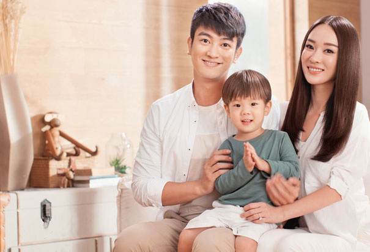

- Q 霍思燕全家此次受康如品牌的邀请担任形象大使，全家人都已经抢先试用了康如的明星系列—燕麦柔润倍护系列，这里也想请你们俩跟大家分享一下?
- A 燕麦给我的感觉就是纯天然，很健康。白色牛奶状的质地，温和柔润，没有硅油，细腻的泡沫，很容易冲洗，淡淡的燕麦味道，真的让我一试即爱。洗好后发质柔顺有光泽，头皮非常舒服，无负担。
- Q 杜江,我们大家都想知道你平时是如何打理自己的头发的呢？
- A 我理想的洗发水是质地温和，洗的干净，不会对头皮和头发造成伤害，可以每天都使用。洗完后觉得头皮很清爽，不痒，去屑温和，感觉发质有质感，更易造型。燕麦的味道也很不错，全家男女都适用。
- Q 《爸爸回来了》火热上映，相信不少人都被霍思燕和杜江的萌宝嗯哼秒杀了，宝贝一举一动都萌翻全场，宝宝很爱动，头发出汗了，如何护理宝宝娇嫩的头发呢？
- A 我们关爱造就孩子健康的头发，一定会给孩子选择洗发水时考虑的是天然纯植物配方，温和无刺激，不能伤害到孩子的头皮和眼睛。这款康如燕麦洗发水极其温和，白色的柔滑质地，起了很多泡沫，闻起来也是淡淡香味，也容易冲干净。我们特别喜欢孩子的头发，觉得抚摸对孩子来讲是一种爱！